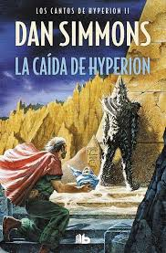
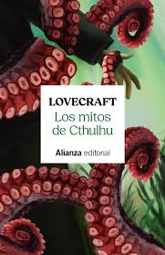
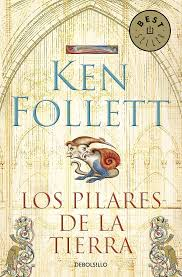

| 1984 |
George Orwell |
Distopía |
Un hombre desafía un régimen totalitario que controla pensamiento, lenguaje y memoria colectiva. |
328 |
 |
| Cien años de soledad |
G. G. Márquez |
Realismo mágico |
La historia de varias generaciones marcadas por el amor, la soledad y lo mágico. |
496 |
 |
| Dune |
Frank Herbert |
Ciencia ficción |
Luchas políticas, religión y ecología en un desierto donde se decide el destino del imperio. |
688 |
 |
| Lector de cadáveres* |
Antonio Garrido |
Histórica |
Un joven con talento médico investiga muertes en la China medieval enfrentando poder y superstición. |
512 |
|
| Nombre del viento* |
Patrick Rothfuss |
Fantasía |
Un músico prodigioso narra su vida entre magia, tragedia y la construcción de una leyenda. |
880 |
 |
| Hyperion |
Dan Simmons |
Ciencia ficción |
Siete viajeros cuentan sus historias mientras una amenaza divina redefine el futuro humano. |
496 |
 |
| Hyperion 2, La caida |
Dan Simmons |
Ciencia ficción |
Las consecuencias del viaje revelan conspiraciones, guerras y el verdadero destino de la humanidad. |
528 |
 |
| Catedral del mar* |
Ildefonso Falcones |
Histórica |
Un siervo lucha por su libertad mientras Barcelona levanta una catedral en la Edad Media. |
672 |
 |
| Sombra del viento* |
Carlos Ruiz Zafón |
Misterio |
Un joven descubre un libro maldito que lo arrastra a secretos del pasado. |
576 |
|
| Mitos de Cthulhu* |
H. P. Lovecraft |
Terror cósmico |
Relatos de horrores cósmicos donde la humanidad es insignificante frente a dioses antiguos. |
400 |
 |
| Pilares de la tierra* |
Ken Follett |
Histórica |
Ambición, amor y traición alrededor de la construcción de una catedral medieval. |
1040 |
 |
| Oliver Twist |
Charles Dickens |
Clásico |
Un huérfano sobrevive a la miseria londinense enfrentando crimen, injusticia y compasión. |
384 |
 |
| Nota: Los articulos "el", "la", "los" y "las" se han eliminado para una mejor lectura. Marcado con asterisco* |